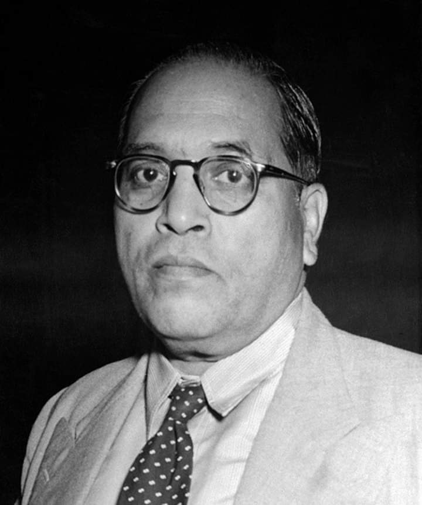

BPSC PatternArticle-anchoring is everything: BPSC tests the EXACT article of each body: Election Commission (Art 324), UPSC (Art 315-323), Finance Commission (Art 280), CAG (Art 148-151), Attorney General (76), Advocate General (165), SPSC (Joint) — plus the 89th Amendment's NCSC/NCST split (2003) and the NHRC (statutory, PHRA 1993) distinction. "Constitutional vs statutory vs executive" classification is the evergreen trap.
71st BPSC PYQAG's rights (71st, Q57): the Attorney General has the right to speak/participate in Parliament (and committees) without voting, and audience in all courts — tested in the 71st. BPSC pairs this with the CAG's audit duties (Arts 149-150) and the EC's election conduct (Art 324's plenary power).
The master table — constitutional bodies at a glance
Body
Article
Composition/Head
Removal
Key powers
Election Commission (EC)
324
CEC + ECs (President fixes number)
CEC: like an SC judge; ECs: on the CEC's recommendation
Superintendence, direction, control of all elections (President/VP/Parliament/state legislatures)
UPSC
315-323
Chair + members (President appoints)
President (only on SC-judge-like grounds)
All-India + central services recruitment; advisory to the President
Finance Commission (FC)
280
Chair + 4 members (President appoints)
— (5-year term)
Tax devolution; grants-in-aid (275); the 15th/16th FC awards
CAG
148-151
Single officer (President appoints)
Like an SC judge (special-majority address)
Audit of accounts; Art 150 forms; reports to President/ Governor → legislature
Attorney General (AG)
76
Single officer (President appoints; qualified as SC judge)
President's pleasure
Government's chief legal adviser; Parliament audience; no vote
NCSC (SC Commission)
338
Chair + VC + members
President
SC safeguards; 89th Amdt split it from ST (2003)
NCST
338A
Chair + VC + members
President
ST safeguards; 89th Amdt (2003) creation
NCBC
338B
Chair + members
President
102nd Amdt (2018) constitutionalised the BC commission
NHRC
— (PHRA 1993, statutory)
Chair (ex-CJ) + members
President on address
Human-rights violations inquiry; 2023 amendment
SPSC (State PSC)
315-318
Chair + members (Governor appoints; only President removes)
President (not the Governor!)
State services recruitment; BPSC's constitutional basis
Mnemonic — the article anchors: "E-C-F-C-A-S": Election Commission 324, CAG 148, FC 280, Commissions (338-series), AG 76, SPSC 315. Bihar's BPSC = Art 315's state commission — the exam-giver tests itself.
Election Commission — the deepest-dive body (Art 324)
Composition evolution: single member (1950-93) → multi-member (1993 ordinance → 1996 Act confirmation); CEC + 2 ECs currently (3 total for national + state elections).
TN Seshan effect: the EC's plenary powers (Art 324) read expansively — Model Code of Conduct enforcement, voter IDs, Election Symbols orders.
Anoop Baranwal (2023): SC's interim verdict: appointments via a committee (PM + LoP + CJI) until Parliament legislates — then the 2023 CEC Act replaced the CJI with a Union Cabinet Minister (PM + LoP + Minister) — the new exam point.
Removal asymmetry: CEC removable only like an SC judge (special majority); other ECs removable on the CEC's recommendation — Art 324(5)'s deliberate asymmetry.
Election crossovers: Art 324 covers President/VP/Parliament/state; RP Act 1950-51 govern mechanics; disqualification via RP Act § 8 etc. (Topic 49 links).

Dr. B.R. Ambedkar — the Drafting Committee's architects designed the constitutional bodies as "independent islands": EC (324), UPSC (315), CAG (148), FC (280) — insulated from executive pressure.
UPSC & State PSCs — recruitment machinery (Arts 315-323)
Art 315: UPSC + SPSCs (Bihar's BPSC); joint commissions possible (e.g., JSPSC for Manipur-Tripura era).
Appointment paradox: the Governor appoints SPSC members, but only the President can remove them — the insulation trick.
Functions (Art 320): recruitment exams, promotions, disciplinary advice — but the government may reject advice (must explain to... under Art 320(3), the government returns reasons).
Limitation: UPSC NOT consulted on reservations policy or cadre rules' reservation aspects — the "UPSC's advice isn't binding" trap.
Expenses: charged on the Consolidated Fund (Art 322) — parliamentary vote not needed; annual report (Art 323).
CAG — the auditor of the nation (Arts 148-151)
Art 149-150: audits the Union, states, PSUs' accounts; prescribes forms with the President's approval; audits all bodies financed from the CF.
Art 151: reports to the President/Governor → laid before Parliament/legislature — the PAC's raw material (Topic 43's link).
Independence: SC-judge-grade salary (charged on CF); removal only on the special-majority address; no office-holding after (ineligible for further government office).
Legacy: first CAG of independent India — V. Narahari Rao (1950); the office traces to the 1858 Auditor-General (colonial predecessor); the office's current duties are defined by the CAG (DPC) Act 1971.
Accountability flow — how the CAG reaches Parliament
CAG audits (Arts 149-150) — Union + states + PSUs + CF-financed bodies
Reports to President/Governor (Art 151)
Laid before Parliament/state legislature
Public Accounts Committee examines → recommendations → government acts
⚡ Fact Matrix — Quick Revision
Fact
Answer
Trap
EC's article
324; CEC + 2 ECs currently
CEC's removal like SC judge; ECs easier (CEC's recommendation)
CEC appointment (post-2023)
Committee: PM + LoP + Union Cabinet Minister (CJI dropped by the 2023 Act)
Anoop Baranwal's interim formula had the CJI
UPSC's article
315-323
Advice not binding; reservations excluded
SPSC removal
President only (Governor appoints but can't remove)
BPSC members' protection
CAG's articles
148-151
First CAG: V. Narahari Rao; not eligible for further office
FC's article
280; chair + 4; 5 years
16th FC chair: Arvind Panagariya
AG's rights
Parliament audience, no vote; all courts
Not a full-time constitutional member of Parliament
NCSC/NCST split
89th Amdt (2003)
Pre-2003: combined commission under Art 338
NCBC constitutionalised
102nd Amdt (2018)
Art 338B + 342A state OBC lists (Maratha/Jat reservation litigation context)
NHRC
Statutory (PHRA 1993)
NOT constitutional — the classic trap
Advocate General
Art 165; state's AG
Mirrors the Union AG; assembly audience, no vote
EC's expenses
Charged on CF (like UPSC's)
Art 324-322's insulation trio
Bihar Connection 🔗
BPSC = Art 315's child: the Bihar Public Service Commission — the exam-giver is itself a constitutional body; its members' appointment (Governor) vs removal (President) is BPSC's self-referential question bank.
Bihar's EC milestones: 2005 Bihar Assembly elections (post-dissolution) tested the EC's credibility; 2020's three-phase Bihar polls (COVID-era); EVM-VVPAT's first statewide trials in Bihar (2010s) — election-commission practice stories from the state.
Bihar's CAG reports: the Patna PAC's CAG-based hearings (flood-relief, teacher-recruitment audit findings 2019-24) keep the CAG→PAC chain locally alive.
Bihar's Finance-Commission stakes: Bihar's ~10% devolution share (15th FC) + 16th FC's 2026-31 award in the exam window — fiscal-federalism's Bihar arithmetic (Topic 45).
NCST/NCSC in Bihar: Bihar has no Scheduled Areas post-2000 (Jharkhand took them), but SC/ST commissions' Bihar visits (atrocities cases, the 2015 Bihar SC notification quashed by the Patna HC — 70th BPSC Q98) supply current-affairs hooks.
Bihar's advocate lineage: Bihar's Advocates General (Art 165) — the Patna HC bar's constitutional officers.
The State Emblem — the constitutional bodies (EC, CAG, UPSC, FC, commissions) exist to keep the republic's machinery accountable; BPSC itself is Art 315's state-level expression.
New CEC appointment law (2023): the Chief Election Commissioner and Other Election Commissioners (Appointment) Act — committee = PM + LoP (LS) + a Union Cabinet Minister; the CJI's exclusion debate; first appointments under it (2024: Gyanesh Kumar era) — the freshest exam point.
16th Finance Commission: chair Arvind Panagariya (appointed Dec 2024); award for 2026-31 lands in the exam window.
EVM-VVPAT litigation (2024): SC's April 2024 verdict — EVM-VVPAT audit stats; 100% VVPAT counting rejected — election-integrity current affairs.
NHRC's 2023 amendment + Global Alliance status (2023-24): NHRC re-accredited; the Protection of Human Rights (Amendment) Act 2023's composition changes.
Bihar angle: 2025 Bihar Assembly elections (EC's scheduling), special-category advocacy with the 16th FC, BPSC's own reforms (exam-calendar transparency) — all live hooks.
72nd BPSC Top 5 PredictionsMost probable questions: (1) EC's Art 324 + CEC's SC-judge-grade removal. (2) SPSC: Governor appoints, President removes. (3) CAG's Arts 148-151 + PAC chain. (4) NCSC/NCST split — 89th Amdt 2003. (5) New CEC Act's committee (PM + LoP + Minister).
📖 Deep dive: For the constitutional-vs-statutory classification drill, the EC's appointment saga, CAG's audit universe, the 89th/102nd Amdt commission changes, and 7 exam predictions — see Topic 47 Deep Dive.
✍️ MCQ Practice Set — 25 Questions (BPSC Level)
Q1. The Election Commission of India is established under:
✅ Correct Answer: (B) — Art 324: superintendence, direction and control of elections to Parliament, state legislatures, President and VP. 315 = PSCs; 280 = FC; 148 = CAG — the article-anchor drill.
Q2. The Chief Election Commissioner can be removed:
✅ Correct Answer: (A) — Art 324(5): the CEC is removable only like an SC judge (special-majority address on proved misbehaviour/incapacity); other Election Commissioners are removable on the CEC's recommendation — the deliberate asymmetry.
Q3. Under the 2023 CEC Appointment Act, the selection committee comprises:
✅ Correct Answer: (B) — The 2023 Act: PM + LoP + Union Cabinet Minister — the CJI was dropped from Anoop Baranwal's interim formula (2023) — the newest exam point in this topic.
Q4. The Bihar Public Service Commission's members are appointed by:
✅ Correct Answer: (D) — Art 316: the Governor appoints SPSC members (for nearly half the posts, consultation with the UPSC is the convention under Art 316(2)); but only the President can remove them — BPSC's own constitutional basis.
Q5. A State PSC member can be removed from office by:
✅ Correct Answer: (A) — The appointment-removal asymmetry: the Governor appoints but only the President can remove (Art 317) — the constitutional insulation of SPSC members.
Q6. The advice of the UPSC/SPSC to the government is:
✅ Correct Answer: (D) — PSC advice is not binding; the government must communicate reasons for non-acceptance. Also: PSCs are NOT consulted on reservation policies — the two standard traps.
Q7. The Comptroller and Auditor General of India is appointed by:
✅ Correct Answer: (D) — Art 148: the President appoints the CAG; removal = SC-judge grade (special-majority address); salary charged on the CF; ineligible for further government office.
Q8. The CAG submits audit reports to:
✅ Correct Answer: (C) — Art 151: reports go to the President/Governor → laid before Parliament/legislature → the PAC examines them (Topic 43's chain). The CAG never reports to Parliament directly.
Q9. The Finance Commission consists of:
✅ Correct Answer: (B) — Art 280: chair + 4 members (5 total) appointed by the President every 5th year; 16th FC chair: Arvind Panagariya (2024-).
Q10. [71st BPSC] The Attorney General of India has the right to:
✅ Correct Answer: (D) — Art 88/76: the AG speaks/participates in both Houses + committees without voting; audience in all courts — 71st BPSC's exact answer. Holds office at the President's pleasure.
Q11. The National Commission for Scheduled Tribes was created by:
✅ Correct Answer: (D) — 89th Amdt (2003): Art 338 (NCSC) + Art 338A (NCST) — the bifurcation of the earlier combined commission. The 102nd (2018) constitutionalised the NCBC (Art 338B).
Q13. The first Comptroller and Auditor General of independent India was:
✅ Correct Answer: (A) — V. Narahari Rao (1950) — the first CAG of independent India; the office was renamed from Auditor-General by the CAG (Duties, Powers and Conditions of Service) Act framework — Rao is the exam-safe first name.
Q14. The expenses of the Election Commission are charged on:
✅ Correct Answer: (B) — EC/UPSC/SPSC/CAG/FC expenses are charged on the Consolidated Fund — non-votable (Art 322 for PSCs; CAG's salary under 148(6)) — the independence-insulation trio.
Q15. The Advocate General of a state (Art 165):
✅ Correct Answer: (C) — Art 165: the Governor appoints the Advocate General (qualified as an HC judge); the state's chief legal adviser; assembly-audience without vote — the state mirror of the Union AG.
Q16. The UPSC is NOT consulted on:
✅ Correct Answer: (A) — UPSC advice excludes reservations (policy) — recruitment/promotion/discipline are consulted matters; the reservation-exclusion is the standard trap.
Q17. Which is NOT a constitutional body?
✅ Correct Answer: (A) — NHRC = statutory (1993 Act); FC (280), NCSC (338), EC (324) are constitutional — the classification drill's cleanest form.
Q18. The Anoop Baranwal case (2023) concerned:
✅ Correct Answer: (A) — Anoop Baranwal (March 2023): SC's interim committee (PM + LoP + CJI) for EC appointments; Parliament's 2023 Act then replaced the CJI with a Cabinet Minister — the appointment saga's sequence.
Q19. The National Commission for Backward Classes got constitutional status through:
✅ Correct Answer: (C) — 102nd Amdt (2018): Art 338B — NCBC constitutionalised; also inserted 342A (state OBC lists — the Maratha litigation context); 123rd's earlier failure was completed by the 102nd.
✅ Correct Answer: (C) — EC = 324; CAG = 148-151; UPSC = 315-323; FC = 280 — the master anchor set every BPSC paper samples from.
Q21. The CAG is NOT eligible for further office under:
✅ Correct Answer: (C) — Art 148(4): the CAG is ineligible for further office under GoI or a state after ceasing to hold office — the insulation clause (mirrors UPSC members' bar under Art 319).
Q22. The Finance Commission's recommendations cover:
✅ Correct Answer: (B) — Art 280(3): vertical/horizontal devolution, grants-in-aid (275), local-body grants (280(3)(bb) — panchayat/municipality funds), plus supplementary measures — Bihar's ~10% share flows from this machinery.
Q23. Bihar's share of the divisible pool (15th FC) makes it:
✅ Correct Answer: (B) — Bihar's ~10.06% is the highest single-state share after UP's ~18% — driven by the income-distance criterion (poorest states gain most) — the "top recipient" framing is the exam-safe version.
Q24. The EC's Model Code of Conduct is:
✅ Correct Answer: (C) — MCC = conventions (first used in Kerala 1960; nationally adopted from 1979) enforced via Art 324's plenary powers — not statute; violations invite EC action (campaign freezes etc.).
Q25. Which body audits all bodies substantially financed by the Consolidated Fund?
✅ Correct Answer: (D) — Art 149-150: the CAG audits the Union, states, and any body/authority substantially financed from the CF — the audit universe; the PAC merely examines the CAG's reports.